Using the AHAB tool to model the ambiguity in legal texts
(step by step guide)
Step 2
Load the Regulatory Text you intend to model. Note: Your Regulatory Text must be in a HTML format to load into the AHAB tool.
- Click “Browse”.
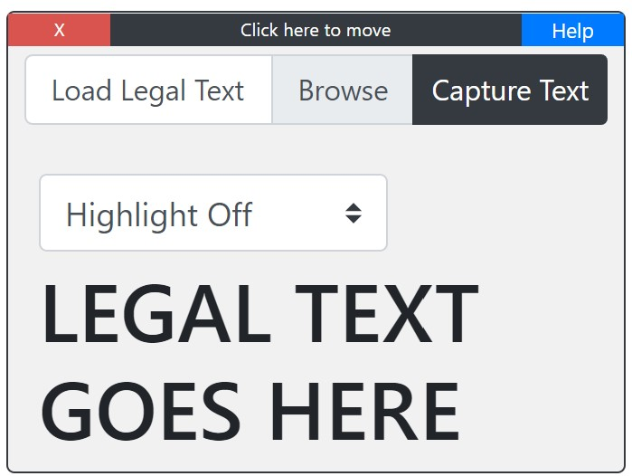
- After loading the Regulatory Text, it should be displayed on the screen. Here is an example of a loaded text on the AHAB tool.
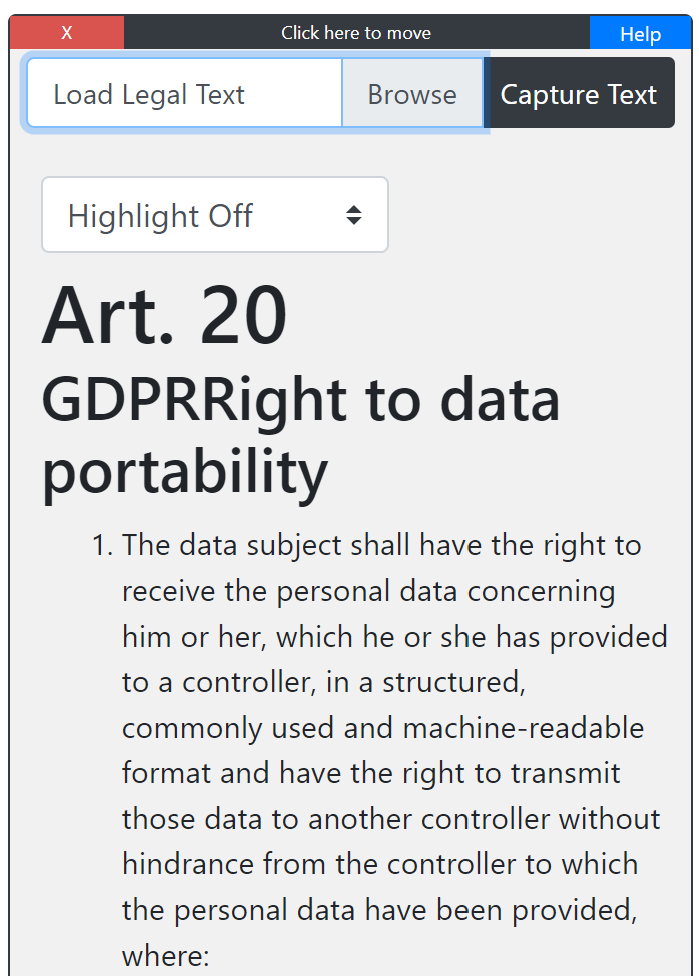
Step 3
Identify and capture the ambiguity within the loaded text.
- Highlight the Ambiguous Text using your mouse cursor.
- The selected text should highlight in blue as seen below.
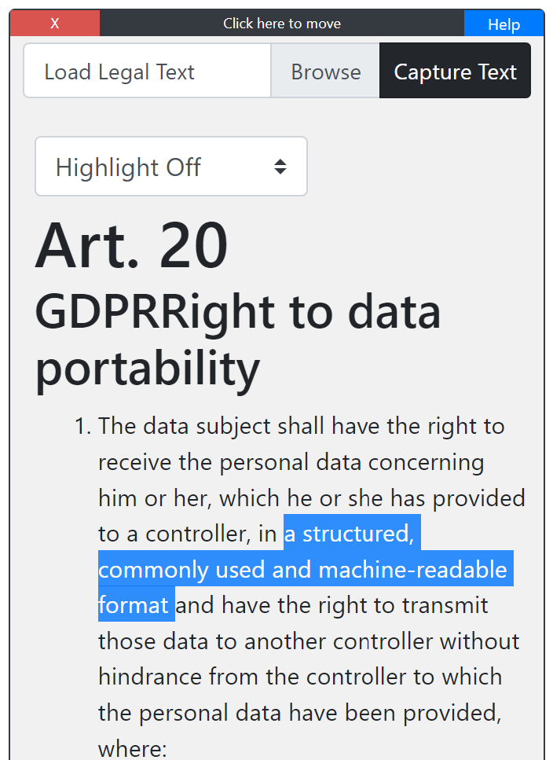
- Once the selected text is highlighted, click the “Capture Text” Button.
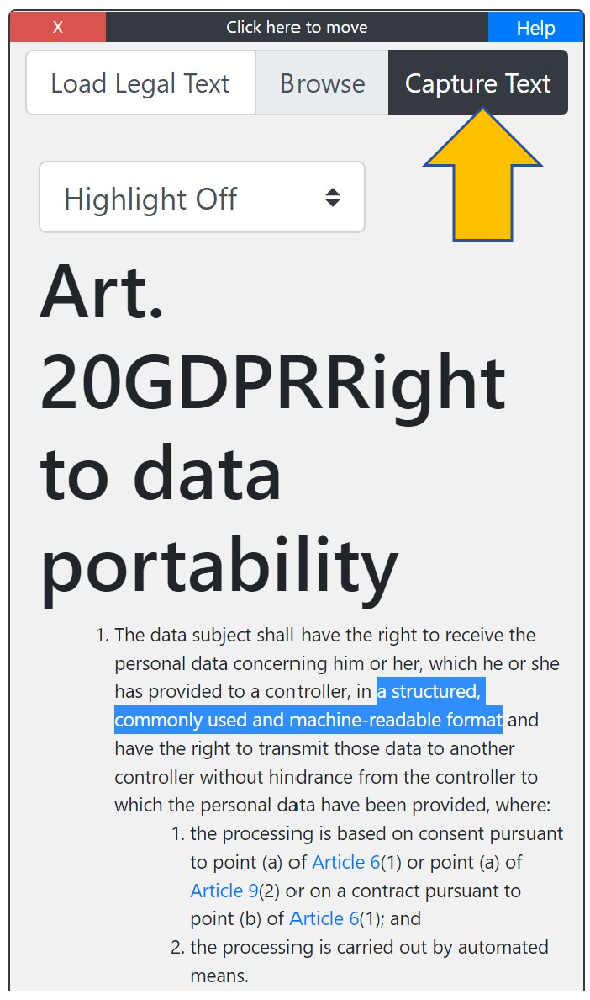
- The selected text will automatically populate in the Ambiguity Attributes Textbox.
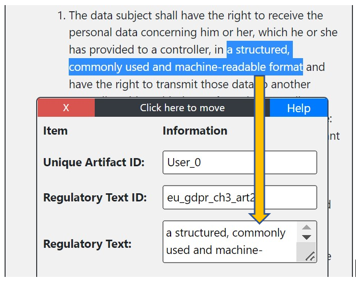
Step 4
Add more details about the selected (ambiguous) text.
- Select the ambiguity type (refer to the table below for more info about what each type mean).
- (optional) Add your notes (detailed info as to why the text is ambiguous).
- Intentionality (Do you think this ambiguity is intentionally made) Yes or No
- The implementability (Are you able to build a software that is comply with this text) Yes or No
- Example Screenshot of a completely filled out “Ambiguity Attributes Textbox” plus the ambiguity type table.
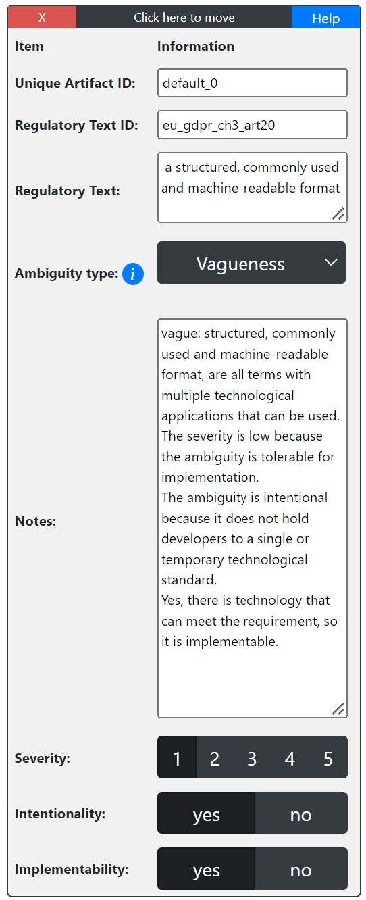 Ambiguity Type Definition Example Lexical A word or phrase with multiple valid meanings Melissa walked to the bank. Syntactic A sequence of words with multiple valid grammatical interpretations regardless of context Quickly read and discuss this tutorial. Semantic A sentence with more than one interpretation in its provided context Fred and Ethel are married. Vagueness A statement that admits borderline cases or relative interpretation Fred is tall. Incompleteness A grammatically correct sentence that provides too little detail to convey a specific or needed meaning Combine flour, eggs, and salt to make fresh pasta. Referential A grammatically correct sentence with a reference that confuses the reader based on the context The boy told his father about the damage. He was very upset. Other If the ambiguity doesn't seem to belong to any of the top categories.
Step 5
Drag your Ambiguity onto the Modeling area.
- Drag the “Ambiguity Node” (i.e., Octagon shape labelled “Ambiguity”) to the Modeling area (body page).
- The Icon will auto-populate the “Unique Artifact Identifier” from the “Ambiguity Attributes Textbox” onto the icon in the “Modeling area”.
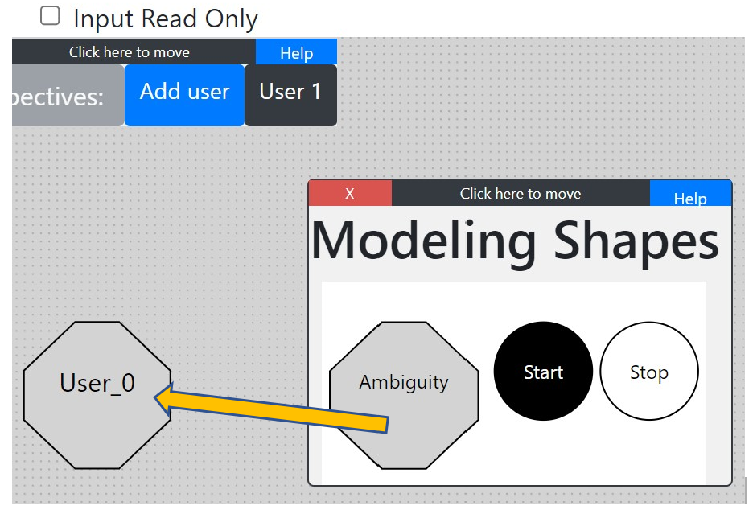
Step 6
Repeat Steps 4-6 until all identified Ambiguities with the selected “Legal Text” are detailed and loaded within the “Modeling Area”.
Step 7
Link your Different Ambiguity Nodes within your model.
- Select the Ambiguity Icon using the mouse cursor you wish to link.
- Drag and drop the Ambiguity Icon the other Ambiguity Icon you wish to link.
- The link between the nodes will appear.
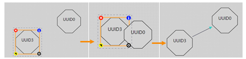
-
If you wish to delete the link:
- Hover over the Link line you wish to delete using the mouse cursor.
- Click on the “Red and White X” button to delete the link.
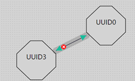
- The complete ambiguity model links all the ambiguity nodes, and has one “Start” and one “End” nodes that are linked to your ambiguity model (to indicate when you start and end). Click Here to know more about the AHAB functions for the ambiguity model building.
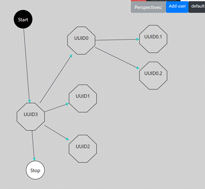
Step 8
Save your work in a JSON file.
- To save your work, click “Export” button (next to Browse and import buttons) .
- A Json file will Download to your default “Downloads” Folder.
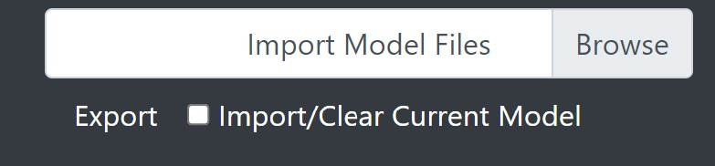
Step 9
Import saved models.
- To import an existing model, click “Browse” under the AHAB Welcome banner.
- Locate the JSON model file you wish to import.
- Click Open, to import the model into the modeling area.
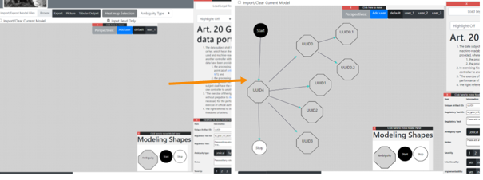
- Multiple models from multiple JSON files can be imported for comparison and can be saved into a single JSON file. Note: Make sure you are modeling the same legal text for comparison.
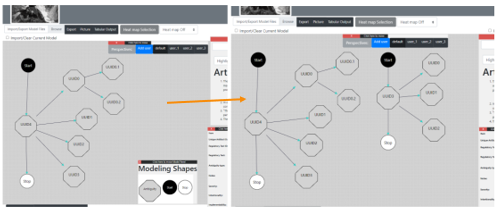